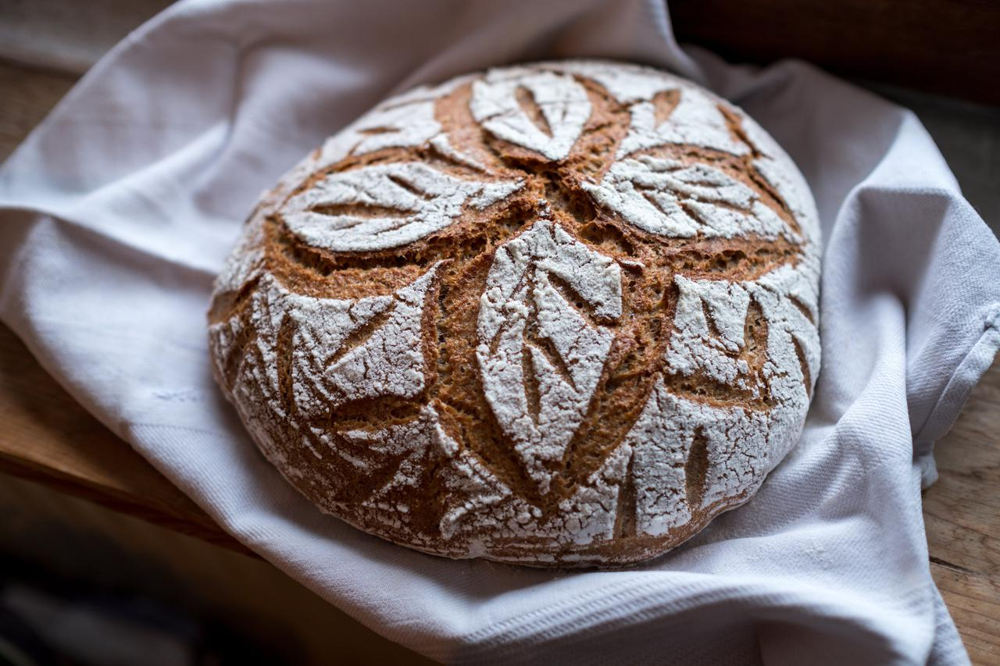

Gesunde Rezepte für Sauerteigbrot und Weiteres
Für dieses Rezept braucht man zugegebenermaßen viel Zeit. Diese Zeit verbringt der Teig aber größtenteils alleine. Belohnt wird man mit einem lockeren, weichen und aromatischem Brot, das ohne Probleme auch mehrere Tage frisch bleibt. Dazu wird es aber wahrscheinlich garnicht kommen. Dieses Brot wird mit 100% Dinkelvollkornmehl gebacken, welches ich selbst aus Dinkelkörnern mahle. Gekauftes, vorzugsweise in einer Mühle, in der es frisch gemahlen wurde, Dinkelvollkornmehl kann auch verwendet werden.
Dieses Brot ist so locker und leicht wie ein helles Brot, hat aber alle gesundheitlichen Vorteile, die Vollkorngetreide mit sich bringen, also viele Ballaststoffe, Proteine, gesunde Fette und weitere Nährstoffe, die in hellem Mehl durch Entfernen der äußeren Schicht des Korn verloren gehen. Durch die lange Gärzeit im Kühlschrank wird das Brot besonders mild und zudem sehr bekömmlich.

am Vortag gegen Mittag
Dieses Rezept schlägt eine Übernachtgare im Kühlschrank vor. Das heißt, dass der fertige Brotteig über Nacht im Kühlschrank gelagert wird und am nächsen Morgen direkt gebacken wird. Der Sauerteig wird gegen Mittag angesetzt, um am nächsten Morgen das Brot zu backen. Das Anstellgut muss also sehr aktiv sein, also 2-3 mal vorher aufgefrischen.
Alle Zutaten für den Sauerteig mischen und 5 Stunden bei Raumtemperatur gehen lassen.
Für das Kochstück alle Zutaten in einen kleinen Topf geben und bei mittlerer Hitze unter ständigem Rühren mit einem Schneebesen zu einer puddingartigen Masse kochen. Mithilfe eines Teigschabers in eine kleine Schale geben und direkt an der Oberfläche mit Frischhaltefolie abdecken (alternativ in ein 200 ml Schraubglas füllen und den Deckel fest draufschrauben). Durch die Zugabe des Salzes im Kochstück wird sichergegangen, dass das Salz aufgelöst ist und sich später besser im Teig gut verteilt. Das Kochstück abkühlen lassen und bis zur Verwendung beiseite stellen.
am Vortag gegen Abend
Wenn der Sauerteig sichbar aufgegangen ist, alle Zutaten für den Hauptteig mischen. Hierzu 180 ml des Wassers mit dem Sauerteig und Kochstück vermischen und dann das Mehl dazugeben. Grob mit einer Hand vermischen, bis kein Mehl mehr sichtbar ist. Nun die Hand mit einer flexiblen Teigkarte sauberkratzen. Die Hand nass machen und den Teig unter Zugabe des restlichen Wassers einige Minuten dehnen und falten. Je nach Mehl, also Feinheit des Mehls, Länge der Lagerung seit dem Mahlen oder auch je nach Hersteller des Mehls unterscheidet sich die Wasseraufnahme des Mehls. Daher erst weniger Flüssigkeit verwenden und dann nach Bedarf den Rest nachschütten. Teige mit weniger Wasser lassen sich zwar leichter formen und kleben weniger, das Backergebnis ist dann aber meistens ein deutlich dichteres und trockeneres Brot. Wenn der Teig dann doch etwas zu feucht erscheint, nicht gleich Mehl nachschütten (denn dann geht das richtige Verhältnis zwischen Mehl und Salz verloren), sondern erstmal gründlich den Teig dehnen und falten. Dadurch baut sich im Teig ein Glutengerüst auf, der den Teig strammer und zusammenhängender macht.
Also vorsichtig das Wasser hinzugeben und den Teig in der Teigschüssel dehnen und falten, bis ein glatter und zusammenhängender Teig entsteht. Dazu wird mit der feuchten Hand von einer Seite unter den Teig gegriffen. Dann den Teig etwas hochziehen und über sich selbst falten und dann die Schüssel drehen. Die andere Hand hält dabei die Schüssel fest. Dies nennt man im englischen auch "stretch and fold". Alternativ kann man den Teig auch auf eine unbemehlte Arbeitsfläche geben un die "slab and fold" Methode anwenden. Hierzu greift man von oben und unten unter den Teig und mit etwas Schwung auf die Arbeitsfläche schmeißen und dabei um 90 Grad drehen. Am Anfang ist das eine eher klebrige Angelegenheit, nach ein paar mal falten sollte der Teig aber gut zusammenhalten. Nach einigen Minuten sollte der Teig dann deutlich glatter und weniger klebrig sein. Sollte der Teig während des Knetens an der Hand kleben, dann einfach den Teig von der Hand kratzen und erneut befeuchten.
Den Teig nun abgedeckt 2 Stunden bei Raumtemperatur gehen lassen. Währenddessen den Teig alle 30 Minunten, also insgesamt 3 mal, kurz dehnen und falten werden.
Nach der Gehzeit den Teig mithilfe der flexiblen Teigkarte auf die unbemehlte Arbeitsfläche geben und mit einer starren Teigkarte kurz zu einer Kugel formen und etwa 10-15 Minuten ruhen lassen. Währenddessen kann schonmal das Gärkörbchen mit Reis- oder Roggenmehl bemehlt werden.
Einen anderen Teil der Arbeitsfläche und den Teig leicht bemehlen und mit der starren Teigkarte den Teig auf das Mehl invertieren, also mit der Oberseite nach unten. Mit bemehlten Händen oder mit der bemehlten Teigkarte den Teig von allen 4 Seiten vorsichtig in die Mitte falten, wie einen Briefumschlag. Den Teig vorsichtig wieder umdrehen und zu einer straffen Kugel formen, dazu vorsichtig mit der Teigkarte von hinten den Teig zu sich ziehen, um 90 Grad drehen und wiederholen, bis die Oberfläche straff und glatt ist. Den Teig leicht bemehlen und vorsichtig mit der glatten Seite nach unten in einen runden Gärkorb setzen. Das Gärkörbchen nun abgedeckt über Nacht, also 8 bis 12 Stunden im Kühlschrank gehen lassen. Wer's eilig hat (wobei man beim Brotbacken keine Eile haben sollte, ein voller Kühlschrank ist aber ein valides Argument), kann den Teigling im Gärkorb auch bei Raumteperatur eine Stunde gehen lassen.
Am nächsten Morgen oder auch gleich einen großen Gusseisentopf mit Deckel im Ofen mindestens 45 Minuten auf 250°C vorheizen. Dann den Teig auf ein passendes Stück Backpaper stürzen und mit einer Rasierklinge einschneiden, z.B. überkreuz. Sofort den Teig mithilfe des Backpapiers in den Gusseisentopf setzen und mit verschlossenem Deckel 20 Minuten backen. Nach dieser Zeit den Deckel abnehmen und das Brot bei 220°C 25-30 Minuten fertig backen. Wenn das Brot schön gebräunt ist, ist es fertig. Auf einem Gitter ganz abkühlen lassen.
Wer keinen Gusseisentopf hat, kann das Brot auch z.B. auf einem Pizzastein oder -stahl backen. Dampf im Backofen kann man erzeugen, in dem man ein Kilo saubere Nägel oder Schrauben in eine alte Backform gibt und diese mit dem Stahl oder Stein aufheizen lässt. Wenn das Brot dann im Ofen ist, vorsichtig mit Ofenhandschuhen etwa 50 ml Wasser auf die Nägel gießen und sofort die Ofentüre schließen.
d